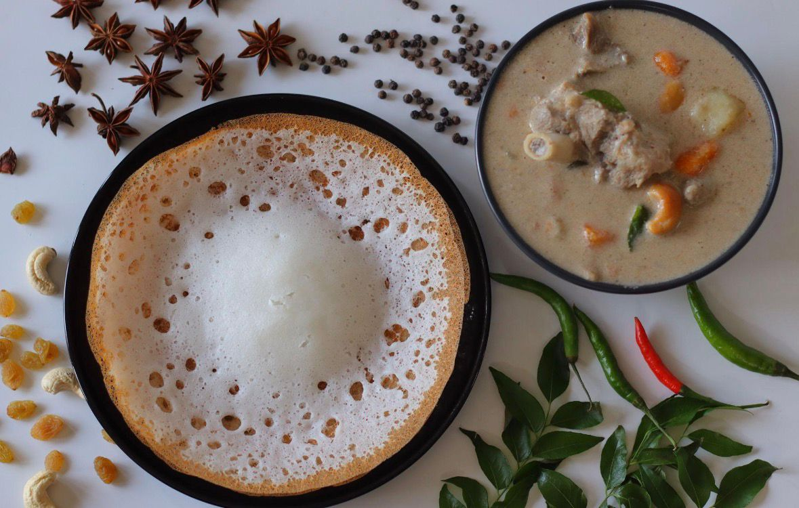
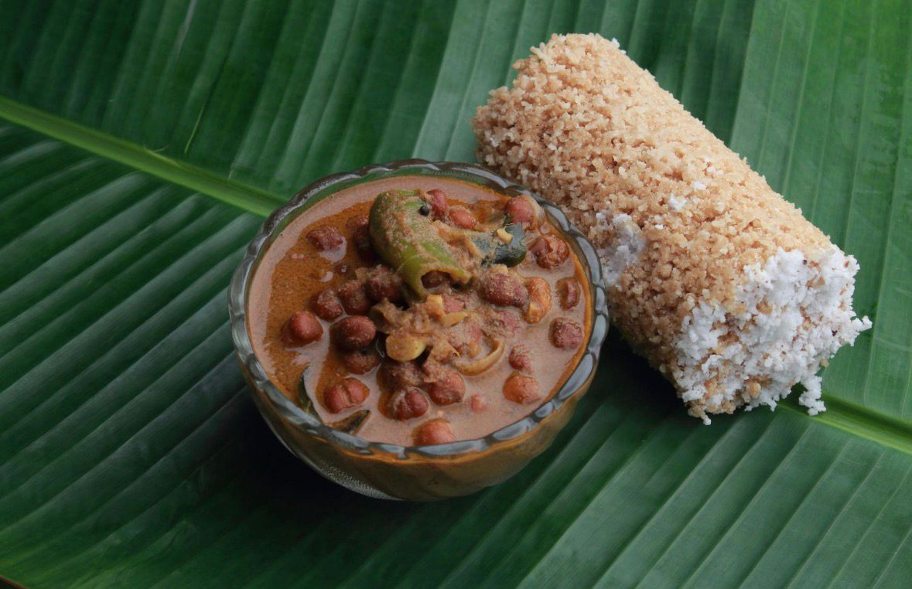
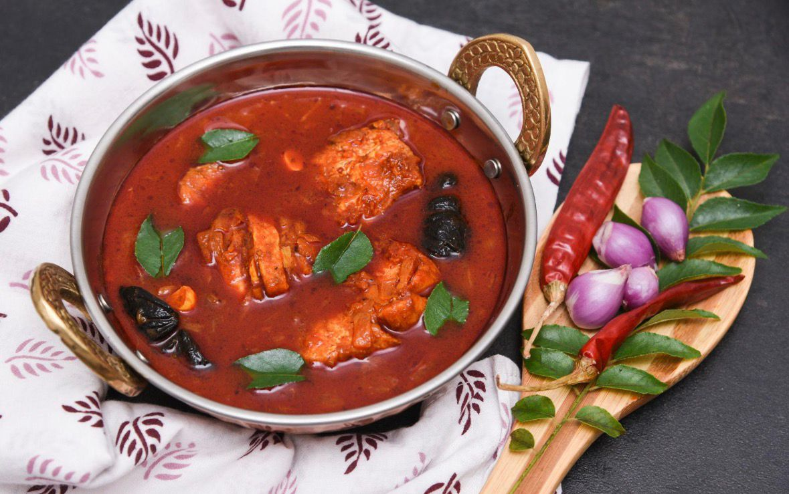
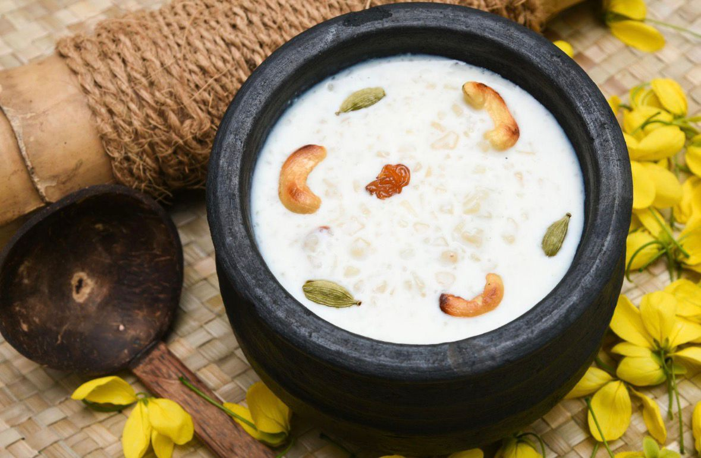
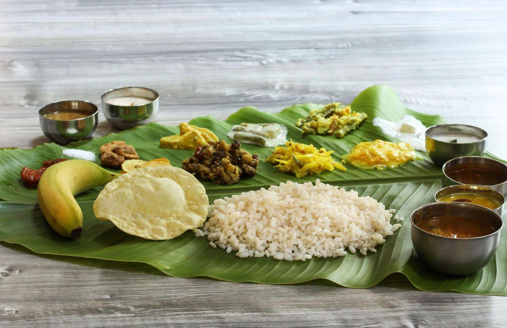

Appam with Stew
Ingredients: Rice, coconut, yeast, vegetables/meat
Description: Soft hoppers served with a mild and aromatic stew.

Puttu and Kadala Curry
Ingredients: Rice flour, coconut, black chickpeas, spices
Description: Steamed rice cakes with spicy black chickpea curry.

Fish Molee
Ingredients: Fish, coconut milk, green chilies, spices
Description: A mild and creamy fish curry cooked in coconut milk.

Parippu Curry
Ingredients: Moong dal, coconut, spices
Description: A simple and delicious lentil curry, part of Kerala Sadya.

Sadya
Ingredients: Various dishes, including payasam
Description: A traditional feast served during special occasions.